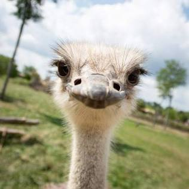
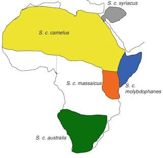
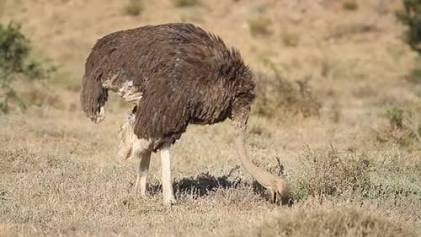
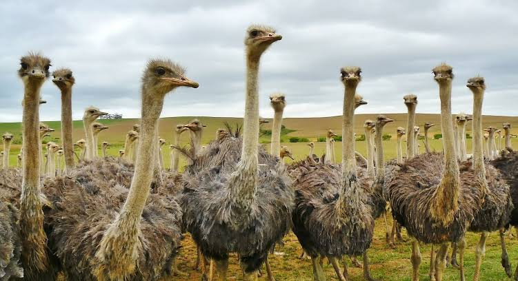
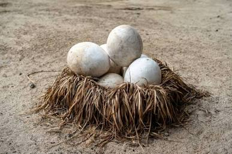
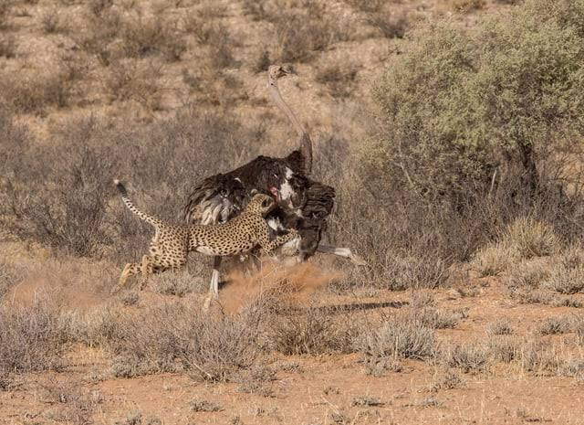

<!DOCTYPE html>
<html lang="en">
<head>
    <meta charset="UTF-8">
    <meta name="viewport" content="width=device-width, initial-scale=1.0">
    <title>Common Ostrich Dossier</title>
</head>
<body>
    
</body>
</html>

<header>
<h1>Species Page: Common Ostrich</h1>
</header>

<nav>
    <ul>
<li><a href="african-adventure.html">Home</a></li>
    </ul>
</nav>

<main>
    <article>
        <section id="basic-info">
            <h2>Scientific Information</h2>
            <p><strong>Common Name:</strong> Common Ostrich</p>
            <p><strong>Status/Conservation:</strong> Least Concern <sup><a href="#ref1">[1]</a></sup></p>
            <section id="classification">
                <h2>Full Scientific Classification</h2>
                <table border="1">
                    <tr><th>Taxonomic Rank</th><th>Classification</th></tr>
                    <tr><td>Kingdom</td><td>Animalia</td></tr>
                    <tr><td>Phylum</td><td>Chordata</td></tr>
                    <tr><td>Subphylum</td><td>Vertebrata</td></tr>
                    <tr><td>Class</td><td>Aves</td></tr>
                    <tr><td>Order</td><td>Struthioniformes</td></tr>
                    <tr><td>Family</td><td>Struthionidae</td></tr>
                    <tr><td>Genus</td><td>Struthio</td></tr>
                    <tr><td>Species</td><td>Struthio camelus</td></tr>
                </table>
            </section>
         <section id="physical-profile">
            <h2>Physical-profile</h2>
            <dl>
               <dt>Size range</dt>
               <dd> Standing height measures 6.9 to 9.2 feet (2.1 to 2.8 meters), making it the largest and tallest living bird species. </dd>

               <dt>Weight</dt>
               <dd> Weighs 220 to 320 pounds (100 to 145 kg), with males being larger than females.</dd>
               <dt>Identification Markings</dt>
               <dd>Identification Markings: Flightless birds with long bare necks, large prominent eyes shaded by long black eyelashes, powerful unfeathered legs equipped with two toes per foot (the inner with a large claw), and distinct black and white plumage in adult males versus greyish-brown in females.  
                <sup><a href="#ref2">[2]</a></sup></dd>
           </dl>
           
       </section>
       <section id="habitat-geography">
        <h2>Habitat & Geography</h2>
        <p>Habitats: Open savannas, grasslands, semi-deserts, and arid scrublands.
            Distribution: Widely distributed across open regions of sub-Saharan Africa.</p>
<h3>Distribution Map</h3>

        </section>
<section id="ecology and behavior">
    <h2>Ecology and Behavior</h2>
<h3>Feeding and Diet</h3>
<p>Omnivorous foragers primarily eating seeds, shrubs, grass, fruits, flowers, and occasional small insects or animal matter, swallowing small stones (gastroliths) to help grind food in their gizzards.</p>
<ul>
    
</section>
<section id="communication and social behavior">
    <h2>Communication and Social Behavior</h2>
    <p>Living in nomadic groups or flocks consisting of a dominant male, a dominant hen, and several lesser hens, communicating via booming calls, hisses, and elaborate visual display dances.</p>
    
</ol>
<h3>Life Cycle and Breeding Behaviors</h3>
                <p>Females lay massive eggs (the largest of any living bird) into a communal shared nest scrape on the ground, where they are incubated collaboratively by the dominant female by day and the dominant male by night.</p>
                
            
            
                <section id="Predators">
    <h2>Predators</h2>
    <p>Apex predators such as lions, leopards, cheetahs, African wild dogs, and spotted hyenas hunt ostriches and their vulnerable eggs, while adults can deliver powerful, lethal kicks in self-defense.</p>
    
</section>
    </article>
</main>